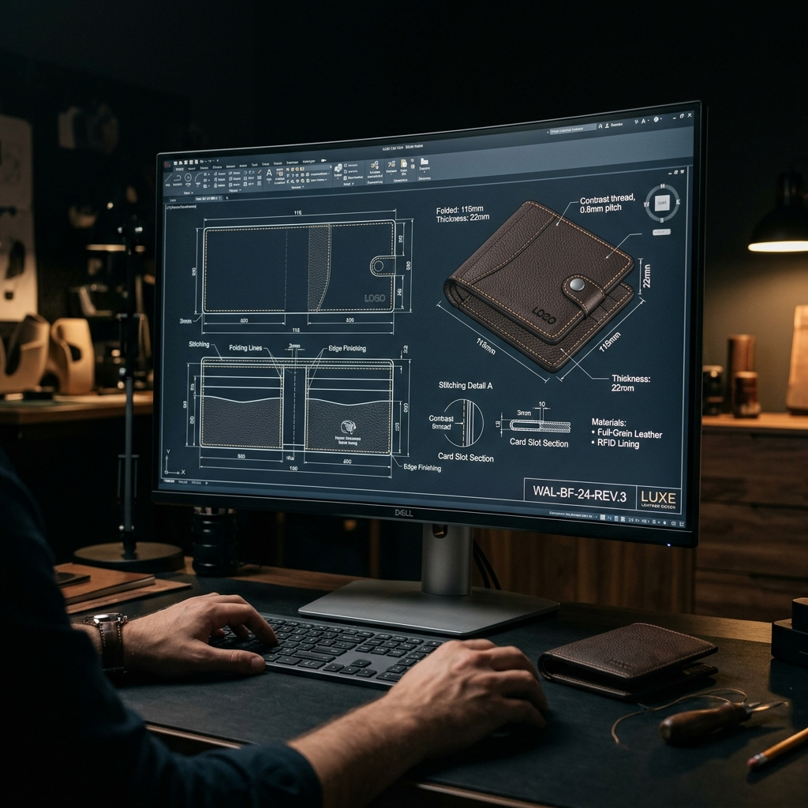
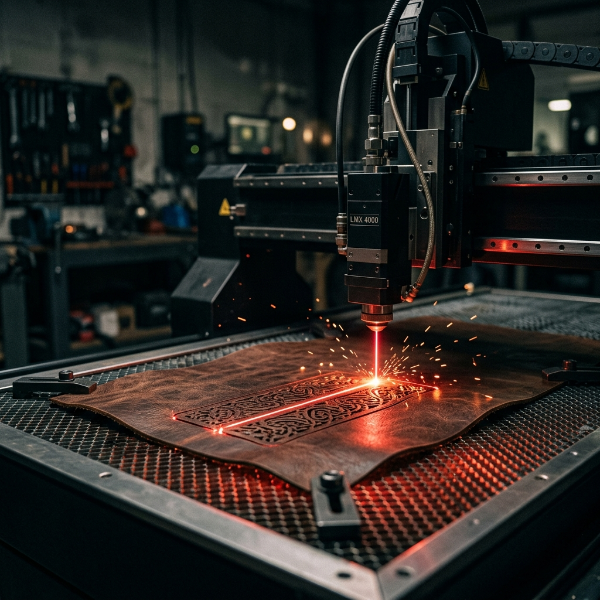
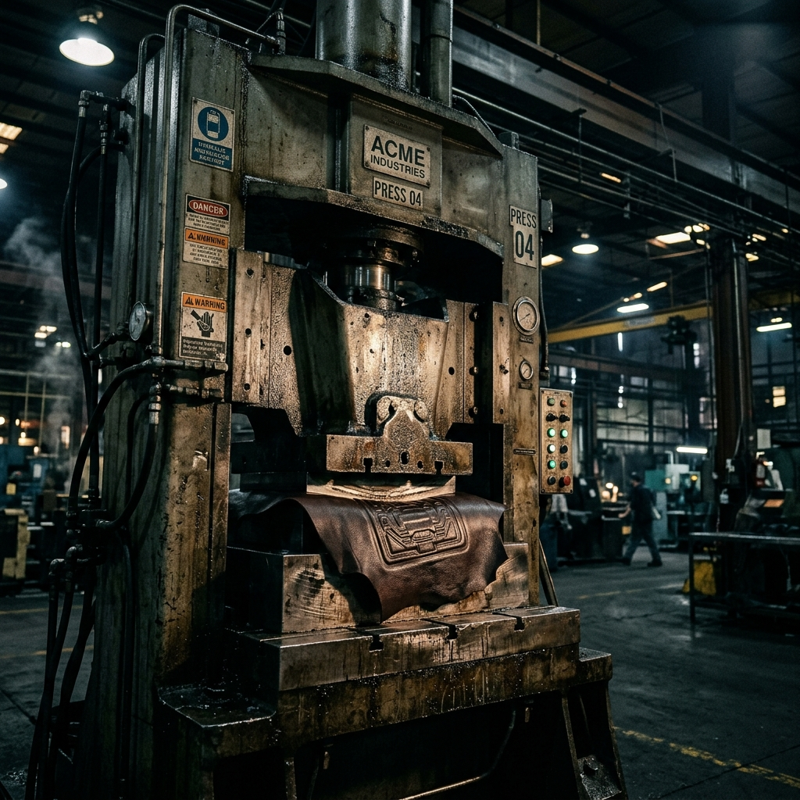
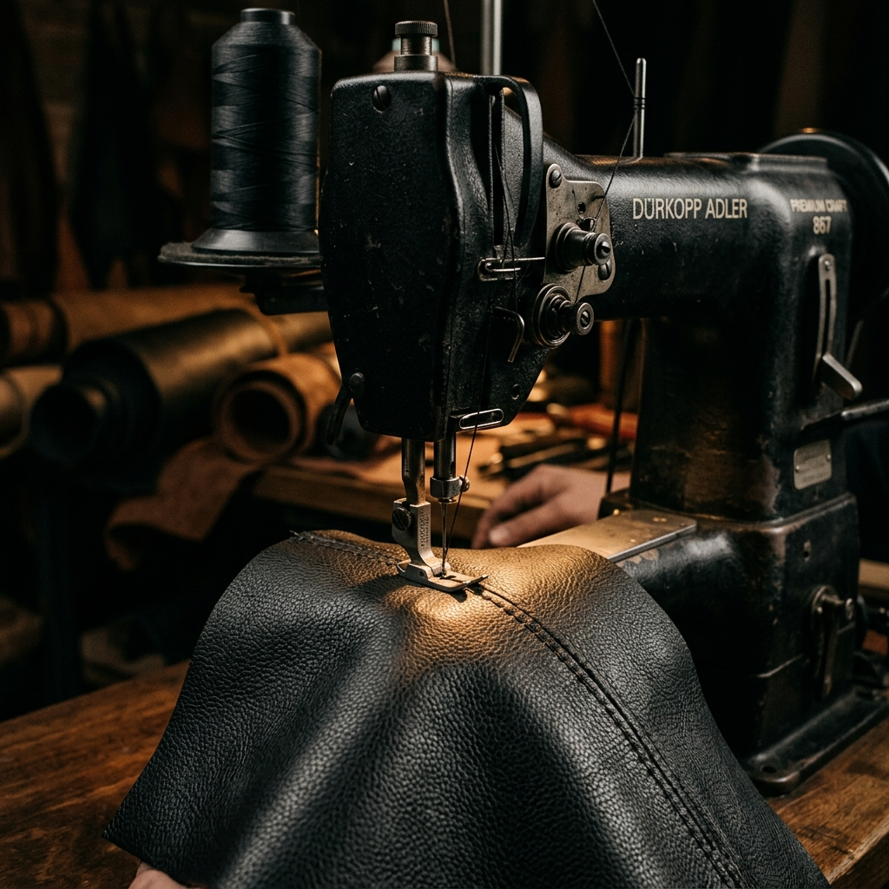

최첨단 기술과 숙련된 노하우의 완벽한 조화

오토캐드(AutoCAD)를 이용한 2D/3D 엔지니어링으로 0.1mm의 오차도 허용하지 않는 완벽한 칼선 설계를 진행합니다.

복잡한 패턴과 미세한 로고 타공을 위한 최첨단 레이저 설비를 운용하여 가죽 단면의 퀄리티를 극대화합니다.

강력한 고압 프레스 라인을 통해 일일 수만 건의 물량을 균일한 규격으로 신속하게 생산해냅니다.

11대의 특수 미싱 설비를 보유하여 일반 봉제로 구현 불가능한 입체적이고 견고한 프리미엄 스티치를 완성합니다.